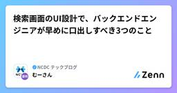

NCDC テックブログのフィード
https://zenn.dev/p/ncdc
NCDC株式会社( https://ncdc.co.jp/ )のテックブログです。 主にエンジニアチームのメンバーが投稿します。 募集中のエンジニアのポジションや、採用している技術スタックの紹介などはこちら( https://github.com/ncdcdev/recruitm
フィード

開発初心者のAWSデビューには、Amplify Gen2 よりも AWS Blocks を薦めたい 1
1
NCDC テックブログのフィード
はじめにこの記事は、「これから開発を始めたい」「AIエージェントを使ったバイブコーディングでアプリを作って、AWSにデプロイしたい」という人に、AWS Blocks を薦める記事です。AWS Blocks は、2026年6月にパブリックプレビューが公開されたOSSフレームワークです。TypeScriptでバックエンドのコードを書くと、そのコードがそのままAWS上のインフラになる、IfC（Infrastructure from Code）と呼ばれるカテゴリのツールです。AWSでフルスタック開発を始めようとすると、同じくTypeScriptのコードファーストで開発できる Ampli...
1日前

検索画面のUI設計で、バックエンドエンジニアが早めに口出しすべき3つのこと 189
NCDC テックブログのフィード
はじめに検索画面のUIを決める会議では、「この条件、とりあえずあいまい検索でお願いします」「並び替えはとりあえず全部入れましょう」といったやりとりがよく発生します。その結果、後からバックエンドで検索速度に困る、という経験を何度かしました。私が働いているNCDCでは、PMだけでなくデザイナーやエンジニアも要件定義や基本設計の会議に参加することが多いです。業務システムの画面は、デザイナーさんが作ったFigmaを元にお客さんとUIを決めていくのですが、議論の主体はデザイナーさんで、エンジニアは気になった時だけ発言する、というスタンスが多いかなぁと思います。本記事では、業務システムの検...
5日前

NeovimをディレクトリベースLSP設定に移行した
NCDC テックブログのフィード
はじめにnvim0.11からlspをディレクトリベースで設定できる機能が追加されています。自分のlspの設定が増えてきたこともあって前々から設定をリファクタしたいと考えており、実際に移行してみました。移行自体は難しくなかったのですが、途中で「設定のマージ優先順位」を確認したので、その顛末をまとめておきます。 関係するものNeovim 0.12.3(この機能自体は0.11以降で利用可能)nvim-lspconfig やりたかったこともともと私の設定では個別でカスタムしたいlspだけ、lspconfigのoptsコールバック内で言語サーバーごとの設定をvim.ls...
8日前
Amazon Braketで学ぶ χ² 検定 : イカサマ量子サイコロを作る
NCDC テックブログのフィード
はじめにこの記事は、AWSサービスを本来の用途とは別の使い方をする記事です。Amazon Braketは量子コンピューターを利用できるAWSサービスです。量子コンピューターの計算は、普通のコンピューターとは根本的に違います。計算の結果が、確率的にしか得られません。つまり量子コンピューターを扱うには、確率・統計の知識が必要になります。逆に考えると確率的な出力ができるということになるので、統計学の道具として使えるのでは？と思いました。そこで、量子コンピューターでイカサマサイコロを作って、\chi^2 検定（カイ二乗検定）で統計的に炙り出してみました。なお、この記事の主役は \c...
13日前
coding agent harnessの選び方：CC / Codex / opencode / Pi / qwen-code
NCDC テックブログのフィード
TL;DR簡易的な検証でcoding agent harnessの比較をしたClaude Code: memory・skill・スケジューリング・マルチエージェントまでフル装備で、Anthropicのエコシステムと統合されている。重厚なハーネスでローカルLLMにとってはtoo muchCodex: personaを与えず、token budgetや「3ターンで諦める」という定量ルールで自律動作の境界を先に決める。今回の計測では成功率100%・軽量とバランスが良いopencode: 挙動をClaude Codeに寄せつつ、検索を専用subagentに逃がすオーケストレ...
17日前
【DynamoDB】なぜGSIは強整合性をサポートしていないのか？なぜLSIは後から追加できないのか？
NCDC テックブログのフィード
はじめにDynamoDB を触っていると、色々な制限（仕様）に出会います。本記事では私が気になった以下2つの仕様について書いたものです。なぜ GSI（グローバルセカンダリインデックス）は強整合性をサポートしていないのか？なぜ LSI（ローカルセカンダリインデックス）は後から追加できないのか？一見すると別々の話に見えますが、調べていくうちになんとなく繋がりが見えてきて面白かったです。本記事ではその仕組みを軸に、上記2つの疑問を説明していきます。!本記事の内容は、公式ドキュメントを参照しつつ私が「こう理解した」という仮説・解釈を多く含みます。裏付けが取れた部分は出典...
20日前
SPECTER2 とトピックモデリングで作る — 自分専用の arXiv レコメンダー
NCDC テックブログのフィード
TL;DRarXiv の新着を毎朝、自分の興味に寄せて並べ替えて届ける個人用の仕組みを作って、数ヶ月回した論文の abstract を SPECTER2（論文特化の埋め込みモデル）でベクトル化して、似た論文同士が近くに集まる空間を作る月次で 1 万本の論文を トピックモデリング（BERTopic） にかけて、数十個のクラスタに分けた「トピックマップ」を生成する自分が星をつけた論文と、自然言語で書いた興味プロファイルの両方を使って、α-blend というスコアでマップ上のクラスタをランク付けする上位クラスタから「おすすめ」、その少し下のクラスタから「こんなのもどう？」を出...
1ヶ月前
AWS Blocks と Amplify Gen2 のリソースを相互利用する
NCDC テックブログのフィード
はじめにこの記事の続編です。https://zenn.dev/ncdc/articles/bb8ffdd1a874ea前回の記事に引き続き、Amplify Gen2 と AWS Blocks を触り、一緒に使えるかを検証していきます。 前回の記事の整理AWS Blocks は、Amplify Gen2 と「補完」関係にあるAmplify Gen2 で便利なコンソールやホスティングやCI/CD と、AWS Blocks ならではの IfC や完全ローカル実行は、共存できるそのためには、AWS Blocks にバックエンドのリソースを寄せて、Amplify Gen2 の...
1ヶ月前
CDK で AWS Alarm を Slack と連携する
NCDC テックブログのフィード
概要CDKを使ってAWSのリソースを監視するリソースを作るにあたり自分のメモとして主題のことをまとめました。以下はCDKを使ってAWSリソース監視をSlack連携させるためにやったことですChatbotにSlack送信設定の作成Cloudwatch Alarm, Cloudwatch Metricの作成リポジトリ: https://github.com/kazuki-inoue202208/iot-observability 前提条件AWS CDK（v2）がセットアップ済みSlackワークスペースの管理者権限がある Step 1: Slack の ...
1ヶ月前
[CQRS] Repository の find と CQRS の Query read、どちらも「読む」のに何が違うのか
NCDC テックブログのフィード
最初に実務でDDD と CQRS を組み合わせた環境で設計、実装をしていると、「読み取り」を担う場所が2つ出てきます。Repository の findCQRS の Query サービスどちらも「DBからデータを取ってくる」処理に見えるので、「じゃあ一覧取得もとりあえず Repository に書けばいいか」となっていた頃がありました。ただ、使い分けを意識せずにいると、Repository が徐々に膨らんで findByUserIdAndStatusOrderByCreatedAt みたいなメソッドが増殖していく経験をした方もいるんじゃないでしょうか。（いやいないだ...
1ヶ月前
AWS の新IfCツール「AWS Blocks」は 、Amplify Gen2 と「補完」関係にあるのか？
NCDC テックブログのフィード
はじめに「AWS Blocks」というAWSサービスが登場しました。2026年6月16日にパブリックプレビューが公開された IfC（Infrastructure from Code）と呼ばれるカテゴリのツールです。この記事では、AWS Blocks を触ったり、Amplify Gen2 と比べたりしながら、どう活用できそうかを探っていきたいと思います。ですが、その前に、まずは「IfC」とはなにか?「AWS Blocks」とは何か?を整理しておこうと思います。 IfC（Infrastructure from Code）とはすっかり定着した IaC（Infrastructur...
1ヶ月前
[Claude Code] SkillとPluginが内部でどう読み込まれているのか、実際のファイルを覗いてみた
NCDC テックブログのフィード
最初にClaude Codeを使っていると、SkillやPluginという言葉が頻繁に出てきます。/plugin install でインストールすると何もしなくても動くし、~/.claude/skills/ にファイルを置くだけで認識される。便利なんですが、「これ実際どういう仕組みになってるんだろう？」と気になって、実際のキャッシュディレクトリやPlugin配布リポジトリのファイル構造を直接確認しながら調べてみました。!本記事の冒頭はSkillとPluginの基本的な説明も含まれているため、必要に応じて適宜飛ばし読みしていただければと思います。では始めます。 まず...
1ヶ月前
Amplify Gen2 × AgentCore は、相性が良さそうで良くない。けど頑張ってくっつけてみた。
NCDC テックブログのフィード
はじめに現在、AWSでAIエージェントを作るならAmazon Bedrock AgentCoreが最初の候補に挙がるかと思います。しかし、エージェント単体ではユーザーに届きません。実際に使ってもらうには、ログインしてチャットできるWebアプリくらいは必要になります。AWSでモダンなWebアプリを作るならAmplify Gen2が定番です。となると「Webアプリ部分はAmplify Gen2、AIエージェント部分はAgentCore」という組み合わせは、いかにも相性が良さそうに見えます。しかし、実はこの2つは相性はそれほど良くありません。具体的には、Amplify Gen2のCI...
1ヶ月前
「生成AIで属人性を解消」には、違和感を感じる。
NCDC テックブログのフィード
生成AI系のセールストークで、こんな主張をよく見かけます。「生成AIで属人化を解消します」「生成AIで誰でも同じ品質が出せるようになります」聞くたびに違和感があったので、その理由を整理してみます。 そもそも属人化は悪いことか「属人化＝悪」という前提で語られることが多いですが、本当にそうでしょうか。属人化をリスクとして語る論拠は、担当者離脱リスク・品質のばらつき・引き継ぎ困難などです。しかしこれはリスク管理の問題であって、属人化そのものが悪いわけではありません。むしろ属人化は、競合に模倣できない競争力の源泉です。管理すべきは「属人化しているかどうか」ではなく「その属人化...
1ヶ月前
DynamoDBには集計系のクエリがないけど、なんとかしたい
NCDC テックブログのフィード
はじめに本記事は、JAWS-UG彩の国埼玉支部 #8 彩の国埼玉支部 1周年（2026年5月30日開催）で登壇した内容を記事にまとめたものです。自分用に作った英語学習ツールを題材に、DynamoDB での集計をどう実現したかを整理します。DynamoDB には集計系のクエリはないですが、なんとかできる部分もあるよという話です。※そもそもリレーショナルデータベースを選んだ方がいい場合は多々あるため、1つの事例として読んでいただけると幸いです。 想定読者RDBは知っているがDynamoDBは初めてという方 DynamoDBとはDynamoDBはAWSが提供するサー...
2ヶ月前
CodexをAmazon Bedrock経由で使う
NCDC テックブログのフィード
!この記事の手順は Claude Code や Codex などの AI エージェントに渡して「この記事を読んで設定して」と伝えれば、そのまま実行できることを目指して書いています。ついにAWSでもCodexが使えるようになりましたね！https://openai.com/index/openai-frontier-models-and-codex-are-now-available-on-aws/Codex CLI は --profile オプションを使うことで Amazon Bedrock 経由で動かすことができます。本記事では、AWS 認証に aws login を使いな...
2ヶ月前
生成AIのストリーミングは、なぜ1回のAPIコールで複数回値が取れるのか
NCDC テックブログのフィード
モチベーションChatGPTやClaudeを使っていると、文字がポロポロと表示されます。あれを見てふと気になりました。あの動き、裏で何度もAPIを叩いているのだろうか？調べてみると答えはNoでした。HTTPリクエストは1回だけで、レスポンスが分割されて少しずつ届くのが「ストリーミング」です。本記事では、ストリーミングが通信レベル・コードレベルでどう動いているかを整理してみます。Amazon Bedrock（Claude）のPython SDKを使いますが、仕組み自体はOpenAI APIなど他のサービスでも同じです。 非ストリーミングまず、ストリーミングを使わない場合で...
2ヶ月前
PostgreSQL の JSONB を NoSQL と比べながら使ってみた
NCDC テックブログのフィード
PostgreSQL に JSONB という型があるらしいと聞いて、どんなものか気になったので試してみました。せっかくなので MongoDB と同じクエリを書き比べてパフォーマンスも計測しています。 まず JSONB ってなに？PostgreSQL には JSON を格納する型が 2 つあります。型中身特徴JSONテキストをそのまま保存読み出すたびにパースJSONBバイナリに変換して保存読み出し時のパース不要・インデックス対応JSONB は書き込み時に一度だけパースして、バイナリ形式で保存します。その分書き込みはわずかに遅いですが、検...
2ヶ月前
GitHub Code QualityのCode coverage機能を試す
NCDC テックブログのフィード
!この記事は、Code Qualityのpublic preview中に無料で試しましたが、2026/07/20に正式リリースとなり、それ以降は1人あたり$10/月の費用が発生します。また、スキャン時にGitHub Actionsの実行時間を消費します。料金や仕様は今後も変更される可能性があります。最新の課金体系については公式ドキュメントをご確認ください。 はじめにGitHubのネイティブな機能にCode coverageが追加されました。https://github.blog/changelog/2026-05-26-code-coverage-in-pull-requ...
2ヶ月前
サイドバーデザインで考える奥行知覚
NCDC テックブログのフィード
サイドバーとメインエリア、どっちが手前？サイドバーのデザインとして、次の画像のように2カラムの横並びの場合を考えます。サイドバーとメインエリア、どちらが手前に見えますでしょうか？人によるかもしれませんが、色がはっきりしているサイドバーのほうが手前に見えるように思えます。 メインエリアがサイドバーに入り込む少しだけデザインを変更して、サイドバー上の選択された項目に、メインエリアの背景色が入り込むようにします。この場合、メインエリアが手前に見えてきませんでしょうか？ サイドバーが浮くさらに変更して、サイドバーがメインエリアに浮いているデザインにしてみます。この...
2ヶ月前